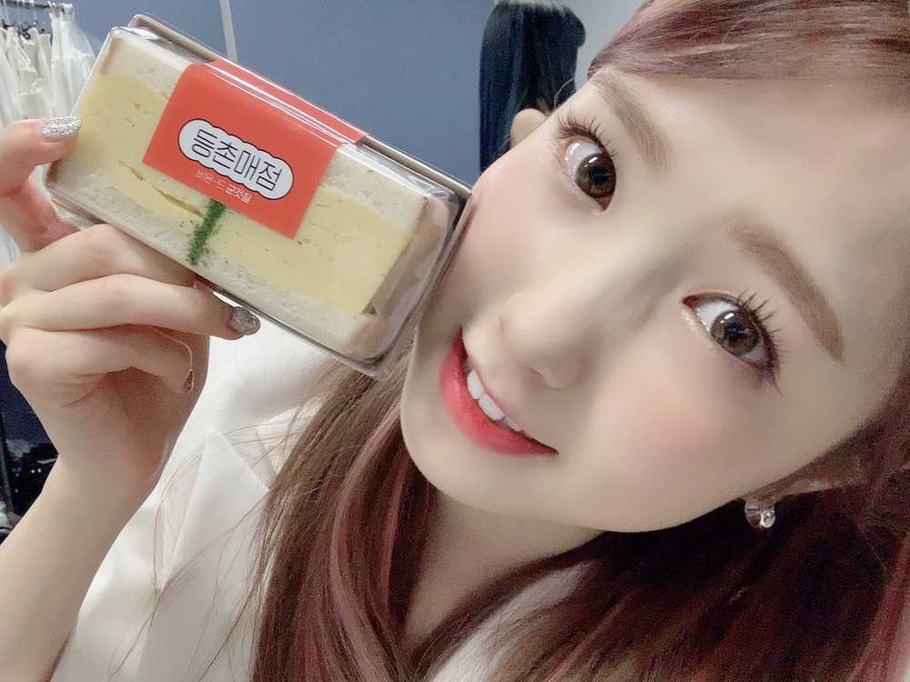

こんにちは😃
ひいだよ🍓
昨日は人気歌謡でした🎤
観てくれたかな？
衣装がとってもかっこよかったよね🥺
全員で白のスーツ✨
ひいも少しは大人っぽく見えたかな？笑
WIZ*ONEのみんなスーツ姿好きだよね😎笑
ひいもスーツおしゃれだし楽だし好き🤩
あと久しぶり(?)でもないか？
ストレートのハーフアップしました👀
やっぱりポニーテールが踊りやすいねっ💃
そして人気歌謡のおいなりさん！！
食べられたと思いますか？！
なんと昨日は売店に
おいなりさんなかったのです😭😭
サンドイッチもあんバターは
なかったかな🧐
ひいが見たタイミングが悪かったかな笑
残念でしたがまたデカフェコーヒー飲めたので
大丈夫でーす🙆♀️笑
でもいつもよりかなり苦くて
ちょっとびっくりした😳
お店によってもコーヒーは
ちょっと味は違うねえ🙂
そして3月突入しました‼️
私の地元栃木県の高校は今日卒業式のところが多いみたいです💡
卒業生の皆さんおめでとうございます🎊
私も高校卒業〜！！！
春は別れの時期でもあり
そして出会いの季節でもある
切ないけどまた新しい自分を見つけることができるこの季節が私はとても好きです😌🌸
3月もいい月にしましょうね😉
ではまたっ
어제는 인기가요에 출연했어요🎤
유부초밥은....어제도 못 먹었어요 ㅜㅜ
이호가 기도해주셨는데... ㅎㅎㅎ
아쉽다😢
그리고 3월이 시작했네요!!
저도 고등학교 졸업~🎓🌸
축하 축하~🥳
어제 스타일리스트 언니한테 들었는데 한국은 보통 졸업식은 2월에 한다고!!
그러면 3월부터는 신학기인가??🤔🤔
아!!
어제 매니저언니가 숙소별로 아이스크림을 선물해주셨어요ㅠ
감사해요~🥺🥺🥺
맛은 4까지 택할 수 있었는데 우리 숙소는
민트초코, 솜사탕, 녹차초코, 뉴욕치즈케이크🧀
저는 민트초코를 좋아하지 않기 때문에
치즈케이크 맛을 전문적으로 먹을거예요ㅎㅎㅎ
잘 먹겠습니당🤤🤤🤤

たまごサンド🥚
ばいばーい👋🏻
ひいまる🥟